用手機或電腦打開網址就能用，不用下載、不用登入。圖中紅框是要按的地方；圖裡的姓名是示範用的假名。
第一次使用時，在最上面「我是」的框框輸入名字。打出姓氏就會跳出名單，點選自己的名字即可。只要做一次，之後會自動記住。
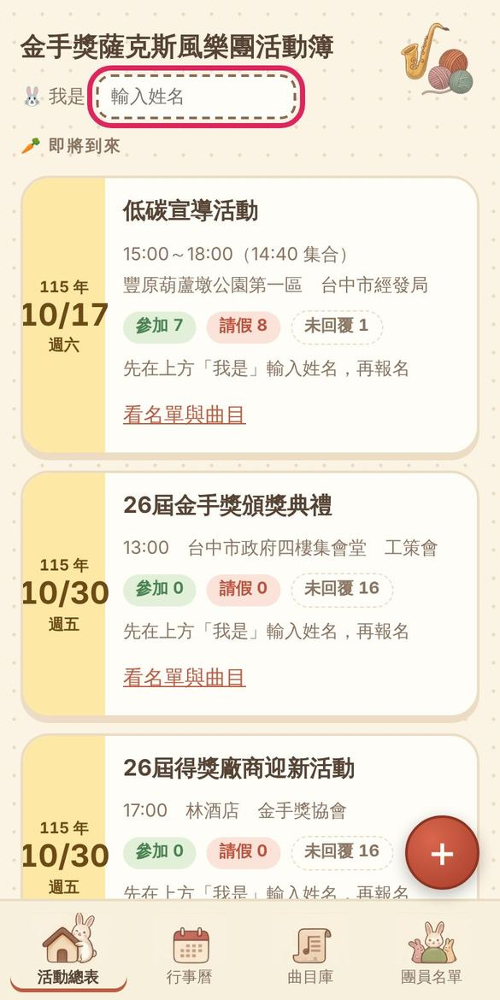
選好名字後，每一場活動下面都會出現這兩個按鈕。
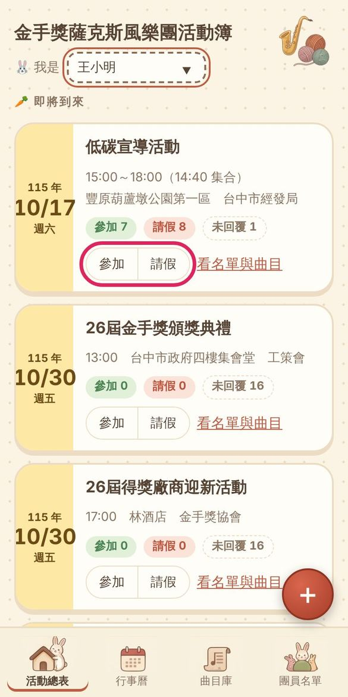
按下去按鈕會變色，上面的人數也會跟著變。按錯了再按一次同一個按鈕就取消，或直接改按另一個。
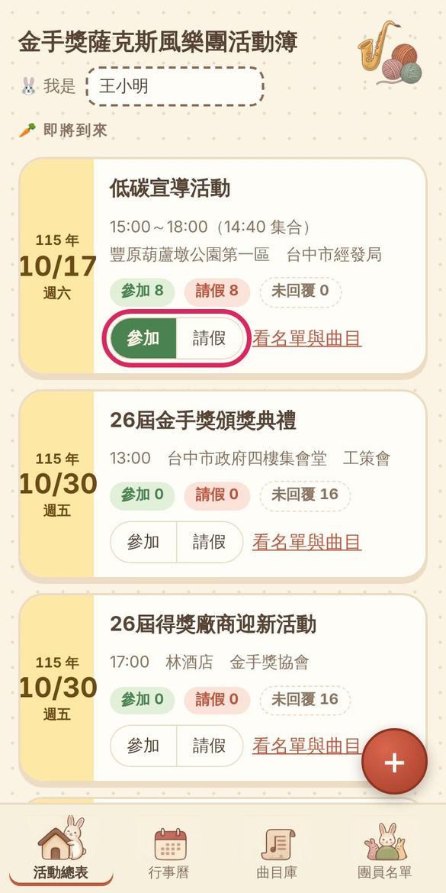
也可以直接點活動名稱。
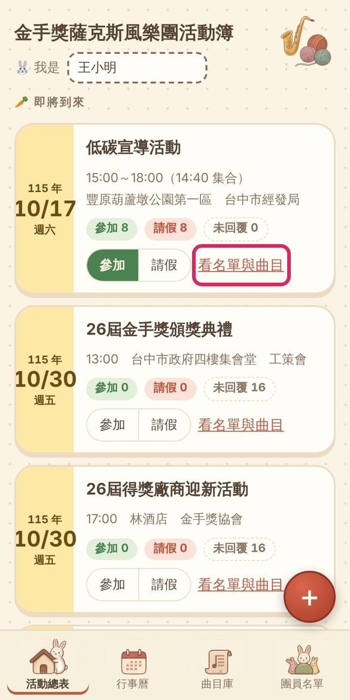
可以看到邀請單位、時間、集合時間、地點、攜伴、服裝、備註和曲目。左上角「回到上一頁」可以返回。
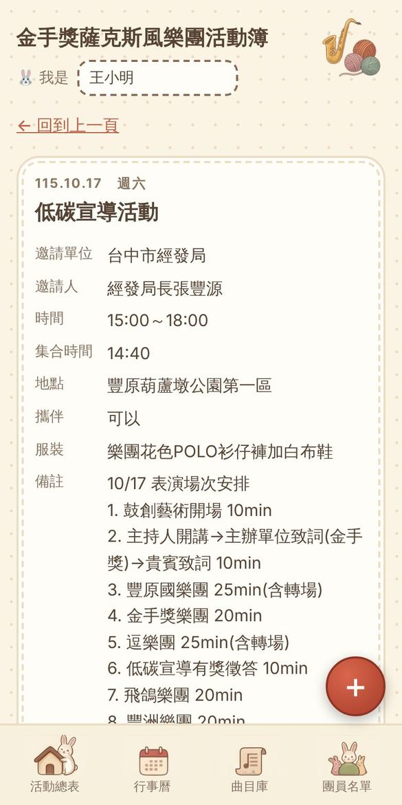
往下滑會看到參加、請假、未回覆三份名單。可以攜伴的場次，按了參加之後會出現「我的攜伴人數」可以選。也可以幫其他團員代為登記。
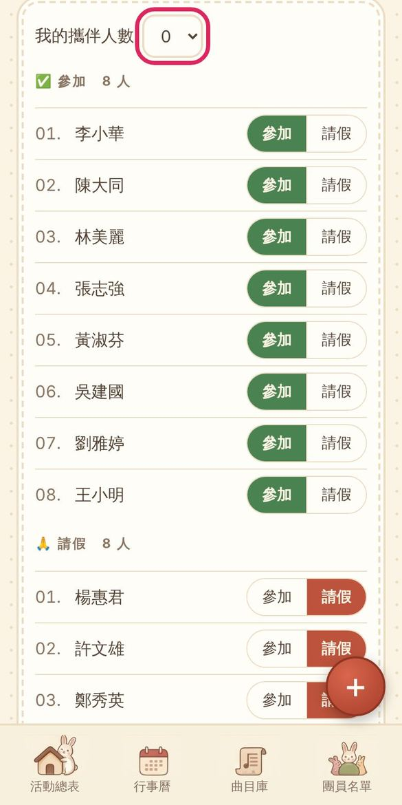
如果這場有開放，節目表下方會出現輸入框。填上表演者和曲目，按「新增我的曲目」就會排進節目表。
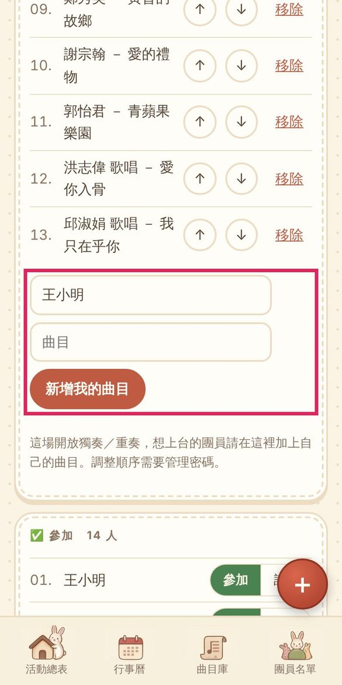
按下方的「行事曆」，用月曆看哪天有演出。週末和國定假日是紅字。點「演出」可以看那一場的內容。
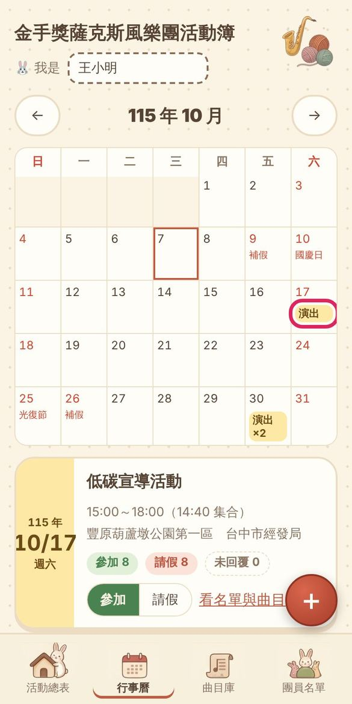
按下方的「曲目庫」，可以看樂團演過哪些曲子、演過幾次、最近一次是哪天。
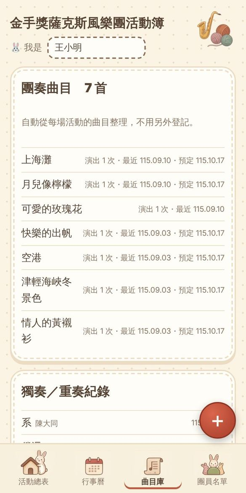
以下功能需要管理密碼，密碼請向管理者索取。
這是新增活動的按鈕，在每個畫面的右下角。
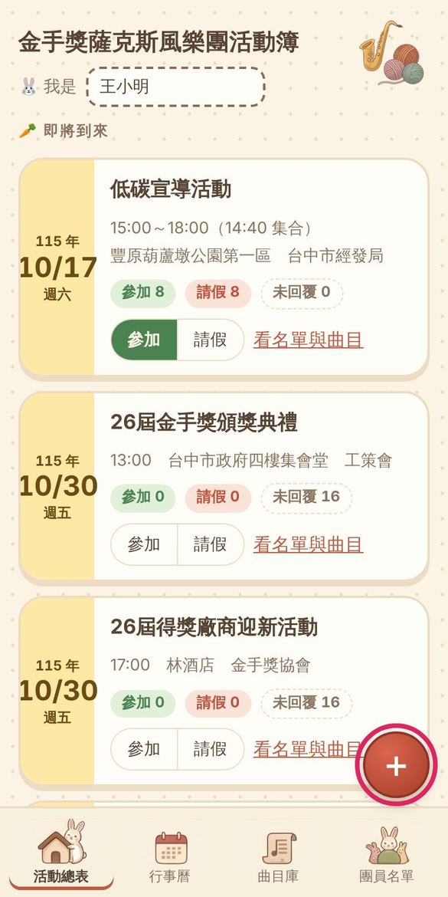
新增、編輯、刪除活動都需要密碼。輸入一次之後，在關掉網頁之前不用再輸入。
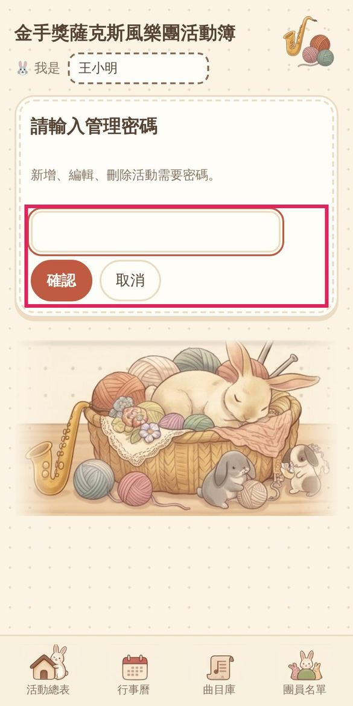
活動內容和日期一定要填，其他欄位有資料再填。集合時間可以自由輸入，例如「14:40」或「16:30-17:00」。
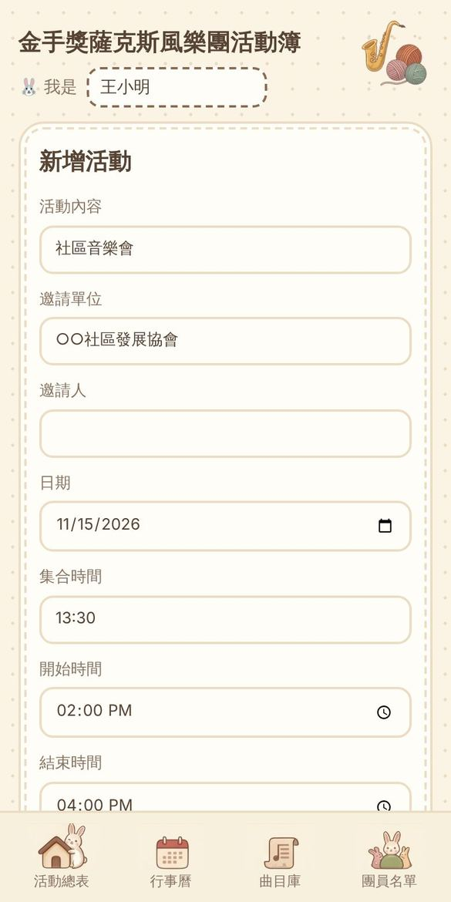
曲目一首一首輸入後按「加入曲目」，演過的曲子會自動提示。用 ↑ ↓ 調整順序、✕ 刪除，編號會自動重排。要讓團員自己報獨奏或重奏，把上面的選項改成「開放」。
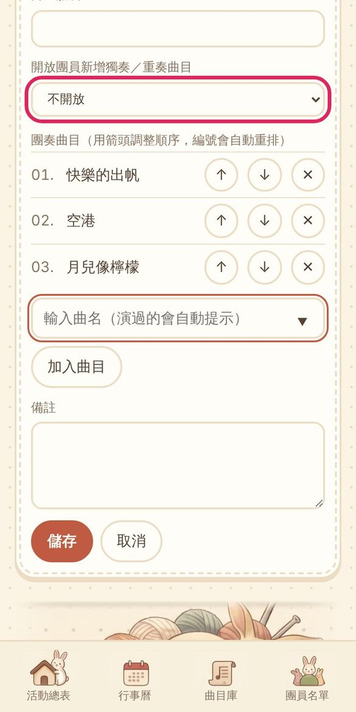
儲存後活動就會出現在總表和行事曆，團員可以開始報名。
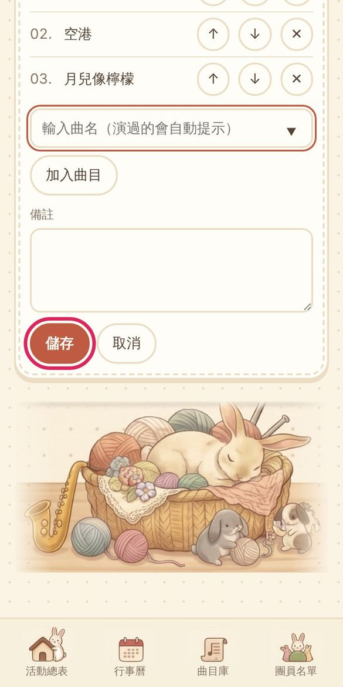
進入活動的詳細內容，按「編輯活動」可以修改，按「刪除」後還要再按一次確認才會刪掉。
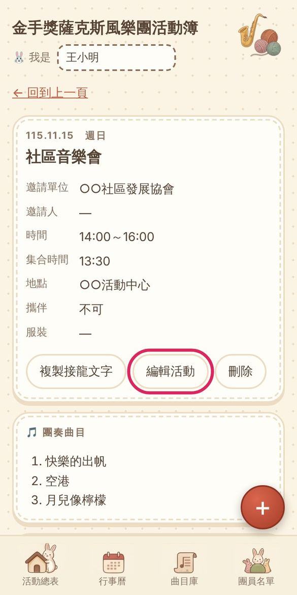
按「複製接龍文字」會產生和以前一樣格式的文字，包含目前的參加和請假名單，可以直接貼到 LINE 群組。
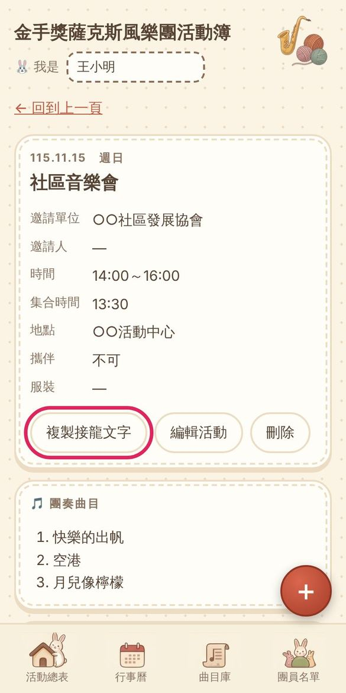
按下方的「團員名單」。輸入姓名按「加入團員」可新增；按「移除」後再按一次確認可移除。
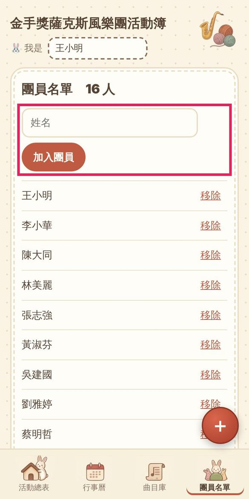